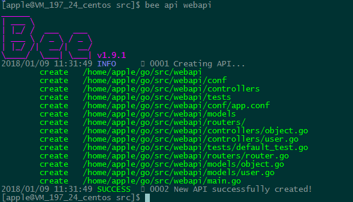
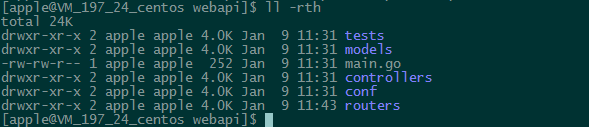
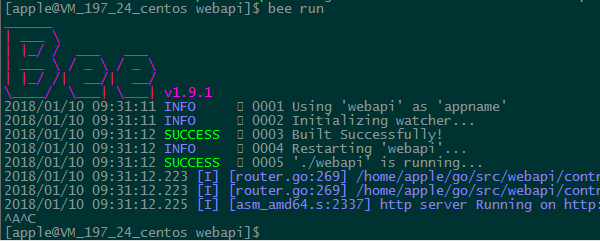
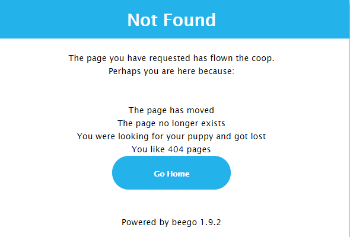

引言
下半年一直在研究go语言，学习了go语言的语法，研究了go语言的一些底层机制，包括协程，调度，channel，类型系统等等。也使用go语言的web框架beego搭建了两个小型的web系统。之前一直做的是游戏后台，应用后台，很少接触web后台，这一次也算是对web后台做了一些深入的研究，包括RESTful api，http/https，cookie/session，爬虫，登录系统，反向代理等等相关知识。项目代码大概码了千行，遗憾的是，项目没有过多的资源再深入进行下去。一切始于beego，所以觉得有必要对beego框架做一个总结，算是个人web开发技术栈上的一环。
项目前期调研的时候，技术方向上选择了go语言，最开始是准备自己来实现一个web后台，因为go语言本身提供了很多丰富的http库，可以很方便的构建web服务，但是实现的过程中发现了很多的阻力。项目组同事开会讨论的时候都觉得还是使用一个开源框架好一点，避免踩坑。于是开始调研go语言的一些web框架，包括gin，echo，beego等等，考虑到gin和echo这一类的过于轻量，我们也没有太多的web开发的经验，而beego的思想源于python的django和flask，后面两个我之前有一定了解，所以选定了beego，实时证明beego的简洁，文档的完善，社区的活跃，使我们做到了快速的迭代。
beego的使用
beego是国人开发的，作者是astaxie，目前的版本是1.9.1，官方文档在beego.me。beego本身是一个MVC模式的框架，所以可以使用它来构建MVC模式的web服务，也可以使用它来构建RESTful的纯API服务。
要使用beego框架，首先要有一套标准的go开发环境，这里就不介绍了，具体可以看go语言官网文档，有了go开发环境，我们就可以开始安装beego的开发环境了。
beego框架和bee工具
首先在src目录下面，执行如下的命令，拉取beego框架和bee工具
1 | $ go get github.com/astaxie/beego |
1 | $ go get github.com/beego/bee |
bee会安装到#GOPATH/bin下面，所以需要将#GOPATH/bin目录加入环境变量中
1 | $ export PATH=$PATH:$(go env GOPATH)/bin |
创建服务
创建beego项目，使用bee命令即可，前面我们说到beego可以创建两种服务，都集成在bee命令中：
bee new webproject 创建一个MVC框架的项目
bee api apiproject 创建一个Restful api项目
因为我的项目都是纯api的服务，所以我也以创建api服务举例子，比如这里我创建一个api的项目

beego框架会自动帮我们生成相关的模块，beego创建的模块目录如下

运行服务
要运行创建的beego项目，只需要执行bee run，将会得到如下的提示信息

访问服务
访问ip:8080端口便可以看到beego服务已经启动起来了

可以看到，使用beego框架创建http服务过程非常简单，接下来我们就可以完善我们的功能了。
框架分析
虽然MVC架构中有Model(模式)-View(视图)-Controller(控制器)，在一个提供api的服务中也可以抽象出模式和控制器，只是没有视图罢了。
controller
beego最核心的概念就是控制器了，要使用控制器，首先我们要定义自己的控制器struct，使用bee api命令创建的模板已经定义好了两个controler，ObjectController和UserController。他们匿名组合了beego.Controller，这样就可以使用beego.Controller定义的一些接口，比如：1
Prepare()
这个函数会在下面定义的这些 Method 方法之前执行，用户可以重写这个函数实现类似用户验证之类。
1 | Get()，Post()，Delete()，Put()，Head() |
如果用户请求的 HTTP Method 是其中的一种，那么就执行该函数，用户继承的子 struct 中可以实现了该方法以处理这个请求。
1 | Finish() |
这个函数是在执行完相应的 HTTP Method 方法之后执行的，默认是空，用户可以在子 struct 中重写这个函数，执行例如数据库关闭，清理数据之类的工作。
当然我们的控制器也可以自己定义一些接口，那么最核心的问题是这些接口怎么对外提供服务呢？这就需要路由的功能了。
路由设置
我认为beego的灵活性的一个特点，在于它提供了强大的路由功能，包括后面要讲到的自动API文档的功能，让我这种之前很少接触web后台开发的人来说，虎躯一震。。。
固定路由
1 | beego.Router("/", &controllers.MainController{}) |
这种是最常用也是最简单的了，一个路由，一个控制器，根据请求的方法get, post, head路由到特定的函数,Get(),Post(),Head()等等
自定义方法及RESTful路由
固定路由不够灵活，controller里面必须要以特定的方法作为函数名。beego提供了更加灵活的方式，用户可以自定义函数名，然后使用如下的方法
1 | beego.Router("/",&IndexController{},"method:funcname") |
多个Method对应一个函数
1 | beego.Router("/api",&RestController{},"get,post:ApiFunc") |
多个Method对应不同函数
1 | beego.Router("/simple",&SimpleController{},"get:GetFunc;post:PostFunc") |
是不是很非常6。。。
正则路由
beego还提供了正则路由
1 | beego.Router(“/api/:id”, &controllers.RController{}) |
当然我认为不要过多的依赖这种方式，毕竟路由里面加上正则很容易乱，不好维护
注解路由
除了上面说的几种路由，beego还提供了更强大的注解路由，注解路由是指，用户不需要注册路由了，只需要在router.go中Include相应地controller，然后在controller的method方法上面写上路由注释就可以了。 注解路由最强大的地方在于可以结合swagger做API文档自动化，非常方便，后面我会详细介绍。
数据处理
路由注册之后，拿到请求的数据，该如何处理呢？beego提供了一组api可以获取http请求的数据
获取query参数
1 | GetString(key string) string |
获取正则变量
这种对应于前面的正则路由
1 | this.Ctx.Input.Param(":id") |
获取json数据
有的时候，我们会把请求的json数据放到Request Body，该如何将这个json数据解析到对应的struct中呢？
1 | var ob models.Object |
获取form数据
也可以使用struct的tag来直接解析表单的数据，例如，我们定义一个表单1
2
3
4
5
6<form id="user">
名字：<input name="username" type="text" />
年龄：<input name="age" type="text" />
邮箱：<input name="Email" type="text" />
<input type="submit" value="提交" />
</form>
然后定义一个struct1
2
3
4
5
6type user struct {
Id int `form:"-"`
Name interface{} `form:"username"`
Age int `form:"age"`
Email string
}
最后进行解析1
2
3
4
5
6func (this *MainController) Post() {
u := user{}
if err := this.ParseForm(&u); err != nil {
//handle error
}
}
日志模块
beego的日志模块也非常的好用，只需要
1 | import ( |
1 | logs.SetLogger("console") #打印日志信息到console |
开启https
web服务器必须要考虑安全问题，要使用beego提供的https功能，只需要在app.conf中做如下的配置即可，其中的公钥和证书需要自己生成
1 | enablehttptls=true |
文档自动化
web开发从早期的MVC模式渐渐发展到现在的前后端分离模式，前台和后台只干自己的事情，这样可以大大提高开发的效率，后台只提供RESTful的接口，前端负责展示的逻辑，这其中有一个问题就是接口联调的时候该如何约定？swagger应运而生。通过swagger-ui定义接口，前后端可以不依赖于部署的服务，灵活的调试接口。而beego则整合了swagger的功能，可以方便的自动生成swagger描述语言。
配置
首先必须要在router.go中开头加上如下的注释
1 | // @APIVersion 1.0.0 |
然后在main.go中写一个如下的配置
1 | if beego.BConfig.RunMode == "dev" { |
路由设置
目前beego集成swagger只支持namespace+Include的路由写法
1 | func init() { |
应用注释
比如我们提供了一个这样的接口，这里的lang是一个swagger路径参数，类型是string, agentinfo是一个dao.AddAgentInfo类型的对象
1 | // @Title AddAgentConfInfo |
然后执行，bee run -gendoc=true -downdoc=true，gendoc表示根据注释生成新的swagger文档，downdoc表示下载swagger相关的组件
跨域问题
客户端调试的时候可能会遇到跨域访问的问题，服务器需要支持，搜索并测试了好久，目前我的做法是在router.go开头加上
1 | beego.InsertFilter("*", beego.BeforeRouter, cors.Allow(&cors.Options{ |
总结
至此，beego框架算是做了一个完整的简介了，beego给我的感觉就是智能，简便，符合go的设计思想。希望以后有机会能多深入的使用这个框架，并且贡献一些自己的代码。